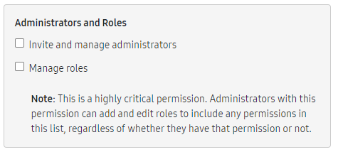
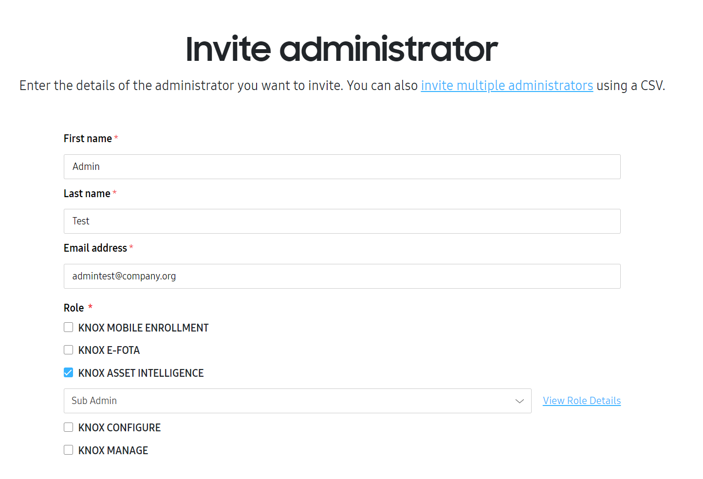
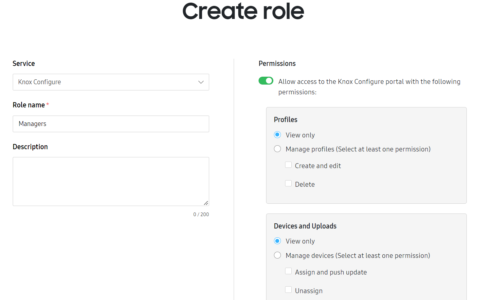
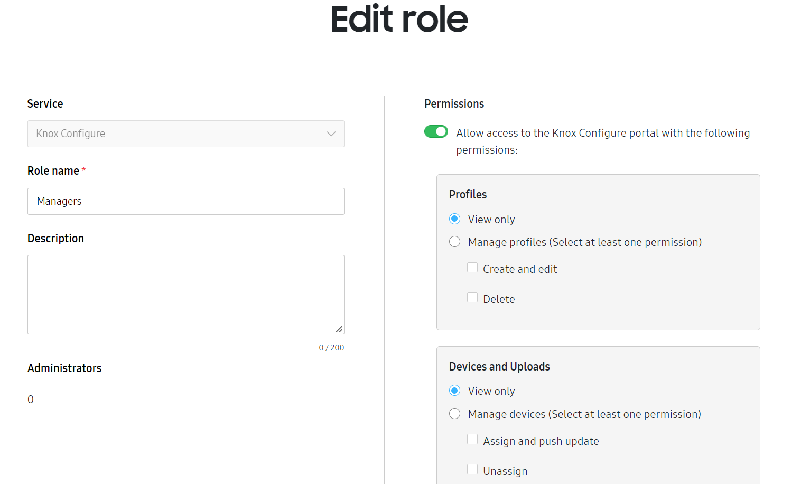

Manage admins and roles for Knox services
Last updated April 17th, 2024
To streamline the admin management process, the Knox Admin Portal offers a consolidated Administrators & Roles page that allows you to invite and manage admins for multiple services.
In the left sidebar of the Knox Admin Portal, click Administrators & Roles to view a list of admins for all supported Knox services.
Only admins with the Invite and manage administrators or Manage roles permission can access the consolidated Administrators & Roles page.
Administrators
The Administrators tab displays a list of all admins registered for Knox services. The list contains the following information:
| Column | Description |
|---|---|
| NAME | The name of the admin. The super admin, who created the enterprise’s tenant, is marked with a crown next to their name. Click an admin’s name to view or edit their details, including services they have access to and roles they have been assigned. |
| The work email address of the admin. |
Additionally, all currently supported Knox services are included as columns in the list. If an admin has permission to manage a service, their role and admin status is shown in the service column. In order to view the admin list for a service, a user must have a role with the Invite and manage administrators or Manage roles permission.

An admin with either the Invite and manage administrators or Manage roles permission can only grant another admin permissions that are less than or equal to the granting admin’s available permissions for the corresponding Knox service.
Invite an admin
Click INVITE ADMINISTRATOR to add a new admin. An Invite administrator page opens, where you’re prompted to enter the first name, last name, email address, and service permissions for the new admin. Similar to other Knox services, you can also bulk invite admins by uploading a CSV file containing their first names, last names, and email addresses.

If an admin has not yet been invited to all available services, click INVITE TO MORE SERVICES to select services and roles for that admin.
Edit an admin
This feature is only available if your admin user has the Invite and manage administrators or Manage roles permission.
Once you’ve invited an admin, click their name in the admin list to edit their details. On the Edit administrator page, you can modify the admin’s first and last names, as well as their roles for each service they’re invited to.

Use the Knox Manage console to add super admins and edit other admin types.
Deactivate an admin
If you want to prevent an admin from managing certain Knox services your company uses, you can choose to deactivate their account. Only active admins can be deactivated.
To deactivate a Knox admin:
- In Administrators & Roles, click the name of the admin you want to deactivate.
- Click MORE ACTIONS, then Deactivate account.
- Select the Knox services you don’t want the admin to manage anymore, then click DEACTIVATE.
The admin then won’t be able to access the Knox services you selected, but can still manage any services you unselected.
Delete an admin
If an admin no longer needs to manage any Knox services for your company, you can delete them from your admin list. Make sure you have the Invite and manage administrators or Manage roles permission for the same Knox services as the admin you’re deleting, or the Delete account option is disabled.
If you delete an admin with permission to manage Knox Guard from the Knox Admin Portal, they can still access the Knox Guard console afterward. Note that they also need to be deleted from the Knox Guard console to ensure their access to Knox cloud services is fully revoked. To do so, submit a support ticket.
To delete a Knox admin:
- In Administrators & Roles, click the name of the admin you want to delete.
- Click MORE ACTIONS, then Delete account.
- (Optional) Enter a reason for the admin deletion.
- Click DELETE.
The admin is then deleted from your company’s account and can no longer access your Knox services and data. Note that this action also deletes their Samsung Knox account.
Roles
On the ROLES tab, you can define custom permissions for admins for each solution, or for all solutions. Above the list, the search bar lets you search for roles by name.
The roles list contains the following information:
| Column | Description |
|---|---|
| SERVICE | The Knox service, or services, the role applies to. |
| ROLE NAME |
Either Super admin or the name of a custom role, both of which you can click on. Depending on whether you click a super admin role or a custom role, the resulting pop up shows:
|
| DESCRIPTION | A short phrase describing the organizational purpose of the role. |
| ADMINISTRATORS | The number of admins assigned to the role. Click a number to see a full list of the admins and their information. |
Create a role
To create a custom role, click CREATE ROLE to the right of the search bar. On the Create role page, you can select a Knox service for the role and enter a name and description for it. Based on the service you’re creating a role for, various permissions are available.
While admins can create roles with any permissions, they can only assign roles that contain permissions that they have themselves.

When you’re finished, click SAVE to complete the role creation.
Edit a role
To edit an existing role, click its ROLE NAME. Similar to the Create role page, you can enter a new role name, description, and permissions for the service. However, you can’t reassign the role to another service.

Once you’re finished editing, click SAVE to record your changes.
Alternatively, you can choose to delete the role. Click DELETE at the bottom of the page to remove the role from the list and remove the associated permissions for all admins who are assigned to the role. Note that this action can’t be undone.
On this page
Is this page helpful?